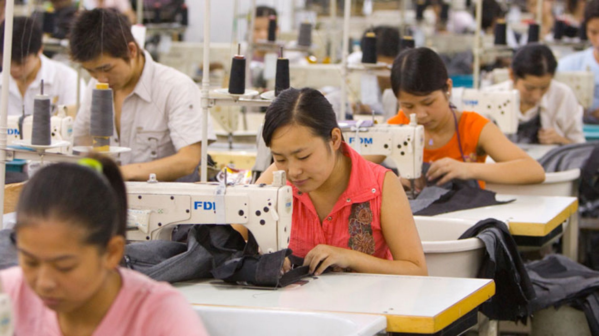

Life in a Purse - On the Alienation of Labour and Fetishism
Two - The Cause, Role, and Effect of Exploitation with Reference to Alienation
In the previous essay, the cause and symptoms of alienation due to the wage system has been discussed briefly. In the following content of this essay, it is assumed that the reader has read and understood the previous essay. Anyone allergic to the barren social reality of utter poverty and suffering should also refrain from continuing reading beyond this point.
It is perhaps imperative to see alienation as a feature uniquely present in the capitalist system, for if any other understanding but this was to be the basis of further pursuits to gain a better understanding of our social reality, such “reality” can only prove to be faulty and differ from what is actually taking place in our world, the reason of which – the wage system – has already been demonstrated in the previous paper. Undoubtedly, the wage system is the key culprit in the alienation of labour, as it engineers our minds to be satisfied with wages and not with self-actualization. However, unfortunately, capitalism has more to offer than said system. As such, and since capitalism, as controversial a system as it is, is undeniably very intricate and quite amazingly interconnected, it is critical to explore the connection between alienation and other aspects of capitalism. The very basis of capitalism lies in its title – capital, in other words, the prioritization of capital, or the expansion thereof, over men. To achieve such expansion, the value of men is restlessly and rigorously exploited, in other words, taken from them and fed into the giant machine comprising of pure capital. Take, for instance, any average worker (not just blue collar). Their income, as characterized by their wage, is always smaller than the value they create, the difference between which is the surplus value, or the portion that is exploited and taken away to feed the expansion of capital. Suppose a worker makes 5 shoes per day, his wage must be lower than the value of such 5 shoes added together, otherwise the owner of the factory, or whatever establishment he works in, cannot make money. Such is the basic and sole purpose of a man in a capitalist society: to be exploited. In a capitalist society, therefore, a worker is primarily, first and foremost, a unit of labour, a body of flesh; only when this first criterion is met is he then a human. Whether or not this system of exploitation is justified is insofar up to the judgement of the reader, as it is not relevant to the topic of alienation. However, it should be clear that an undeniable link exists between exploitation, the cornerstone of capitalism, and the alienation of labour. On such basis, this paper aims to explore this relationship and how it characterizes the lives of workers today.
In effect, there are three main aspects to exploitation in terms of alienation: the complete coup d’etat of the product of labour produced by the workers against them, the forced betrayal of the workers against their comrades, and the monastic mutual exclusion of any other form of human enjoyment, and even self-improvement, with the material enrichment of the workers. The first issue will be discussed first as it is far simpler than both the latter. In the most rigorous form of capitalism, or perhaps the “ideal” form of capitalism, the labourers, or the units of production, retain no more value to themselves than what is necessary for them to continue surviving and producing value, as well as more production units (that is, to reproduce), the rest of the value produced by them should be taken away for the expansion of the capital, the inherent enemy of the workers. The product of labour produced by the workers, therefore, are given away into a world which does not belong to them, a world which, in and of itself, is created by them. A Chinese proverb captures this idea quite succinctly: “He who lives in towers does not have mud on his fingers; he who wears silk does not produce a single thread.” Beyond the inequality, such exploitation completely alienates the purpose of labour of the workers, as the world that is created by the worker is in no way friendly to him: as such a world is controlled by the capital , such a world only aims to further impoverish him and exploit him. In the eyes of such a world, its own creator – the worker, is better off being impoverished, miserable, ignorant, and weak, as such is the easiest state which it can exploit the worker. The result of such exploitation is, therefore, obvious: the more, the harder does the worker labour, the stronger becomes the world created by his proper self that goes against him and aims to further destroy and exploit him, and as such, the more impoverished is his body and mind, and the less he, as an individual, has to his name. In short, performing honest work not only does not benefit the worker, but strengthens his opponent – the capital, thereby actively hurting him. As such, labour becomes not a rewarding task but a punishing one. It comes, therefore, as no surprise that the worker is so alienated from labour in a capitalist framework that useful work would not only not be performed voluntarily, but the worker is actively miserable during their work hours, and is only happy and free when they are not working. Any apologist, economist, and others of the like that claims otherwise, for instance, that workers are “lazy” or it is “human nature to not want to work”, is, therefore, effectively claiming: “What a great shock it is that humans do not want to hurt themselves in doing honest work!” And it is clearly redundant to even consider wasting time to address that claim.
To understand the second aspect of alienation caused by exploitation, it is vital to understand how capitalism keeps its population sufficiently content with such exploitation. Realize, primarily, that the greed of the capital has no end: it continuously demands more value to be given to it. To encourage the population to work longer hours for less pay, thus producing more value for the capital, it needs to constantly remind its workers as to the consequences of being forsaken by the capital should one not produce enough value, which is done by maintaining a great unemployed population whose sole job is to live in misery. To quote the famous Chinese premier in the 1990s after enforcing its state-mandated unemployment wave and forcing millions of factory workers out of their jobs: “[The Chinese economy] can only have hope if [it has] a large unemployed population” . Although in some cases, such a formal conspiracy does not exist, in the words of Carlin, it does not have to so long as interests converge: the cycle of inevitable economic crises in the capitalist system already ensures that a steady supply of unemployed are generated, and businesses are often keen to lay off workers to ensure the rest are obedient and does not struggle for better conditions and pay. To ensure the unemployed are living in misery, the cost of living would be made unaffordable for those without a job, and although a façade of attempt to help them escape poverty is put up using welfare, such programs, in any capitalist country, be it the US, Britain, France, Germany, China, India, or even countries generally regarded as “welfare-oriented”, like Canada, are never truly successful in helping people escape poverty due to its rigorous means test that stops the aid once the unemployed starts making the smallest income. In fact, a 2022 study finds that over 80% of unemployed people in the US once received welfare that allowed them to jump above the poverty line, only for the aid to abruptly stop and for them to fall back under the poverty line. As such, to avoid falling into such perpetual misery of unemployment, as reminded of constantly by the aforementioned population, the employed will do virtually anything to satisfy their great “saviour”, that is, the capital, the exact entity which caused them to be in this predicament in the first place. It is quite normal for the reader to object this claim, as most readers probably live in developed countries, where the issue is not nearly as prevalent. Such an issue is immensely more severe in developing countries, as the current system of economic globalization effectively transferred most class conflict in developed countries there. The so-called cheap labour in such countries is generated precisely because the workers have no bargain power against the capital, and has to perform according to its desires if they want to survive. Notice, for instance, the situation in China, where the workers are forced to work for 12 hours per day, 7 days per week, for a wage that is barely enough to afford their everyday expense, a wage which is rarely delivered on time. The issue of such lack of bargaining power can be discussed at another time, however, such a power dynamic paves way for the second aspect of alienation: to avoid falling into the misery of unemployment, workers will do anything to increase their competitiveness. Realize, critically, that their opponents in this competition are their fellow workers. As such, to be able to survive in a capitalist society, workers are forced to betray their comrades, colleagues, and friends, to sell them out and put them down, so that he can come out on top in the competition. In China, for instance, the concept of “involution” is the precise example of this: competitions exist with the sole meaning of eliminating as many people as possible, for instance, the average Chinese highschooler understands advanced calculus and differentiation, not because of some magical racial superiority in mathematics, but because if they cannot do so, they will lose the competition and be sent to work schools where they will be stuck performing laborious, extremely low-paying and harsh factory jobs for the rest of their lives. In China, the average mother, upon seeing a street sweeper or a janitor, turns and tells their child “If you don’t spend more time studying, you’ll end up like them!” However, the immense effort that people put in winning such competitions is ultimately meaningless: they stand to gain absolutely nothing except the ability to continue working at the job they deserve to work at anyways. Does a lawyer really need to understand differential equations? Does a programmer need to understand organic chemistry? How about a philosopher, artist, poet, or musician? The reality is, however, that if a lawyer does not understand differential equations, or that a programmer does not understand organic chemistry, they will not even be considered for the university programs, not to mention the job themselves. Even worse, such competition does not stop when school ends. In workplaces, workers must compete to work later and later hours for no reward, as those who fail to do so will be fired and become unemployed; in interviews, workers must give out lower and lower wage expectations should they want to be successful in finding a job; the list goes on. As such, it is natural that workers believe such meaningless work and effort designed to put down their fellow comrades and themselves are utterly meaningless, and as a result, is reluctant to participate in such work, thus alienating labour.
The final aspect of alienation due to exploitation deals less with performing labour itself and more with the potential to innovate. It goes without saying that innovation is the heart of all progress, and is critical to performing useful work. As such, to alienate the desire to innovate is equivalent to alienating the desire to perform labour itself. As aforementioned, capitalism prefers workers to be ignorant and have no identity, as it makes them more likely to obey the exploitation cast unfairly upon them. Therefore, any form of activities that enhances the ability, knowledge, or identity of workers are made as forms of luxuries that are mutually exclusive with the preservation of the little material wealth possessed by the workers. As Marx succinctly summarized, “The less you eat, drink, buy books, go to the theatre or to balls, […] and the less you think, love, theorize, sing, paint, […] etc., the more you will be able to save and the greater will become your treasure […]. The less you are, the less you express your own life, the more you have, the greater is your alienated life and the greater is the saving of your alienated being.” To survive, and to ensure that in cases of accident that such survival can still be maintained, therefore, workers are forced to turn their heads away from the innovation that their minds crave to satisfy their desire to self-fulfill, and instead save the money in their pocket. However, such activities – buying books, going to the theatre, thinking, loving, theorizing, painting, etc., are necessary for one to build an identity beyond just being a tool for production and exploitation, or one to innovate and, with all things considered, to enjoy life. Such a basic right is thus stripped from the workers. As such, primarily, when working at their jobs, the workers, unable to see the purpose of such work, seeing as their source of joy and self-fulfillment are made unattainable should they want to survive, naturally detest working; however, more importantly, workers lose the ability to innovate and create. In a word, they lose the ability to dream. As such, workers become not humans, but mere machines, producing value for the capital, while their innovation, and eventually their desire for innovation, is murdered mercilessly in its infancy. Innovation is thus seen by workers as a form of luxury, practically speaking, a waste, as it does not bring more income but takes away their savings. When such an ideology takes over, the alienation of the worker is complete, as his sole purpose in life becomes to increase his savings and his material wealth, an endeavour that will garner very little success due to his status as a tool for exploitation.
What is, therefore, the reality for the average worker in a capitalist society? The answer to that question should be clear. A life of infinite suffering, while forced to appease and satisfy the culprit that caused him such suffering; a life of hard labour, the products of which only acts against him; a life of meaningless competition, to bring down his friends and help his enemies; but above all, a life of no purpose whatsoever, with no aim, no goal, not even the ability to imagine, dream, and innovate, working for the superficial, constructed, materialistic goal of monetary gains, a goal which cannot even be satisfied under a rigorous capitalist system. So long as exploitation still exist, capitalism will not cease to exist; so long as capitalism continues to exist, alienation, due to both the wage system and exploitation, will continue to plague the minds of workers and leech on their souls. Perhaps such is why many Marxists are not afraid of death: when all is taken away from you, even your very identity and imagination, when you are treated not as a human but as a tool, when your efforts strengthen your enemy, your soul is effectively seized from you, and you are no better than a mere corpse with a beating heart. So, the question is simple – there is no ideological struggle, no political animosity, but only a simple choice: would you rather live as a chained corpse, or die a struggling free man? All this theory boils down to this, and it is really quite simple, simple enough that we all have felt its effects at some point, when we lie wide awake in the middle of the night, wondering why we do what we do; when we complain about school or work, asking, perhaps half jokingly, what is the meaning of life, but stopping in the middle of our sentence and genuinely pondering that question; when we see injustice in our world, but realize that we have long lost the passion to do anything about it; and even when we just don’t want to wake up on a Monday morning to go perform the repetitive work we’ve been doing for the past ten years. We know about alienation; we feel alienation on a daily basis; and, unfortunately, if we are to not do anything, we will continue to feel this way, and so will our kids, and their kids, until the end of time. This system of capitalism treats us as slaves. It tries to bind us using the wage system, exploit us of our surplus value, and turn us into mindless meat sacks and machines that knows nothing more than working repetitively. It tries to kill us, but still keep us alive. And we all know that we’ve had quite enough of that.
Even if they use their guns, their swords, or their bombs, they would only be liberating us from our chains. All of their weaponry added together does not come close to matching our strength once we realize this fact, and unite as one.
Mother, I shall become a dandelion.
-2024.1.4, Hongkong China, Tony Su
Photo Credit: Issie Lapowsky
Click Me For Document Download as .docx File